Chain of Thought 中
展开入口及回答仍偏下；总高仅多 9.5，不能掩盖正文起点约 28 的位移。主要关联 48 dp 展开行。
原站 · 原站 288.0 / Android 297.5

Chat 轻
标题/说明间距、空态标题字距和行距已修正；空态整体更接近原站。重置按钮仍因独立 48 dp 区域而偏下，说明宽度与基线仍有细差。
原站 · 原站 800.0 / Android 800.0
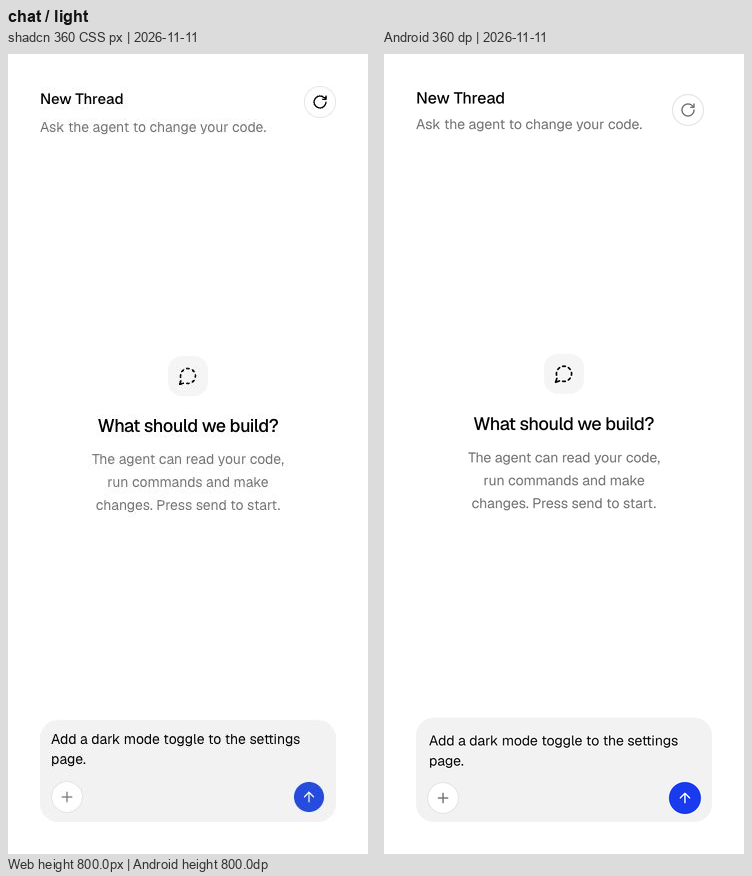
Checkpoint 中
Restore 已改为弱化色、中等字重；分隔区仍较高，第二组消息下移。
原站 · 原站 288.0 / Android 290.7
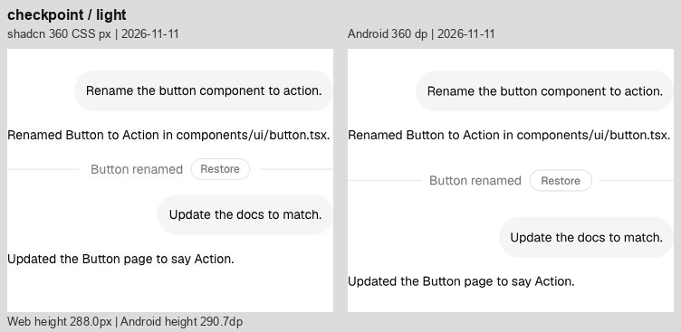
Confirmation 初始态 轻
可见按钮在 288 高画布内仍约高 10；按钮自身的形状接近。
原站 · 原站 288.0 / Android 288.0
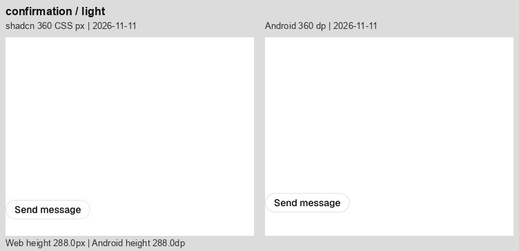
Confirmation 待审批 中
Deny/Approve 已在面板内垂直居中；两侧说明均为两行，上轮“多换一行”的判断不成立。Thought 和 Reset 的点击范围仍使面板及总高度偏下。
原站 · 原站 288.0 / Android 327.6
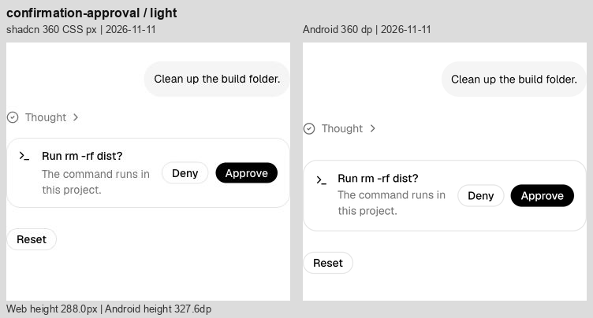
Context 轻
胶囊外观接近；独立 48 dp 点击范围使画布增高 20，中心向下偏 10。
原站 · 原站 124.0 / Android 144.0

File Tree 明显
7 个可点击行均为 48，网页为 28，累计高出 140；缩进和浅色选中底色已改善。保留触控尺寸时，这一密度差仍会存在。
原站 · 原站 244.0 / Android 384.0

Inline Citation 轻
主要断行已接近；徽标占位、圆底宽度和文本基线仍有细差，最后一段总高度略少。
原站 · 原站 374.0 / Android 369.5

Message 中
行号右移 4，行号至代码的间距由 16 缩至 12，命令起点保持不变。原站与 Android 命令横向起点已接近；主要差异仍为操作图标 48 对比 28 的中心间距、消息纵向位置和细微字体基线。
原站 · 原站 434.2 / Android 459.8
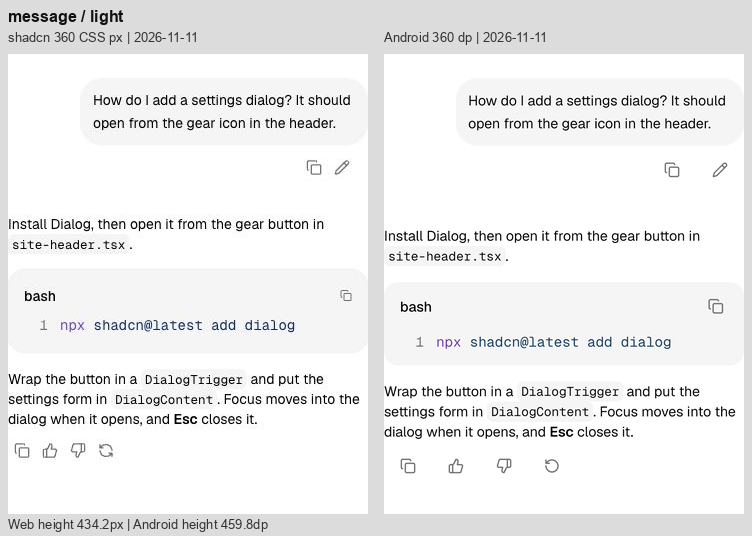
Model Selector 轻
32 高的模型/Effort 胶囊、文字边距与外框已接近；横向位置、文字基线和深色边框仍有小差别。
原站 · 原站 160.0 / Android 160.4
Plan 中
静态步骤间距接近；可展开标题较高，使步骤连接线、回答与 Replay 整体下移。
原站 · 原站 367.5 / Android 409.1
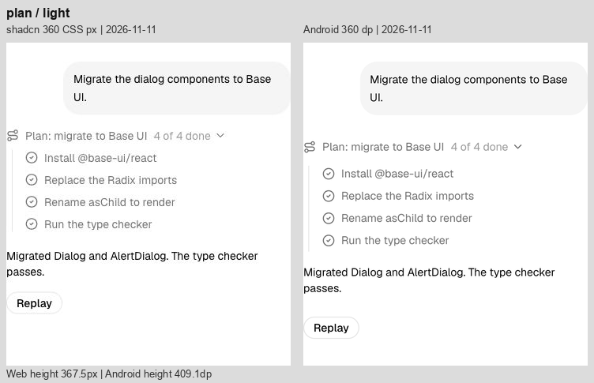
Prompt Input 轻
整体尺寸与内部可见控件已接近，仍有少量控件横向偏移、占位文字基线和边框差异。
原站 · 原站 160.0 / Android 160.4
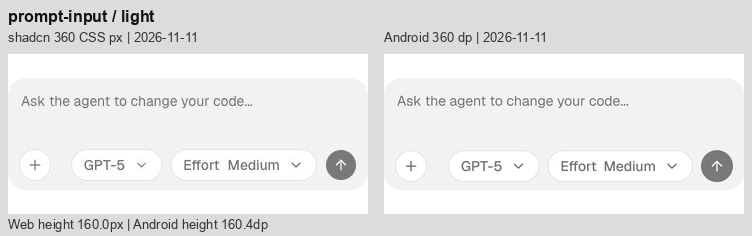
Queue 明显
4 个任务行仍比网页高 20 左右；去除额外行间距后，回答及 Replay 仍明显下移。
原站 · 原站 344.8 / Android 473.5

Reasoning 中
正文恢复 22.75 行高，并以一个空行的高度分段，随字号缩放。第一段仍受 48 dp 展开入口影响而偏下；总高增大是恢复文字节奏后的真实结果，没有再压缩行距抵消入口高度。
原站 · 原站 417.2 / Android 459.0
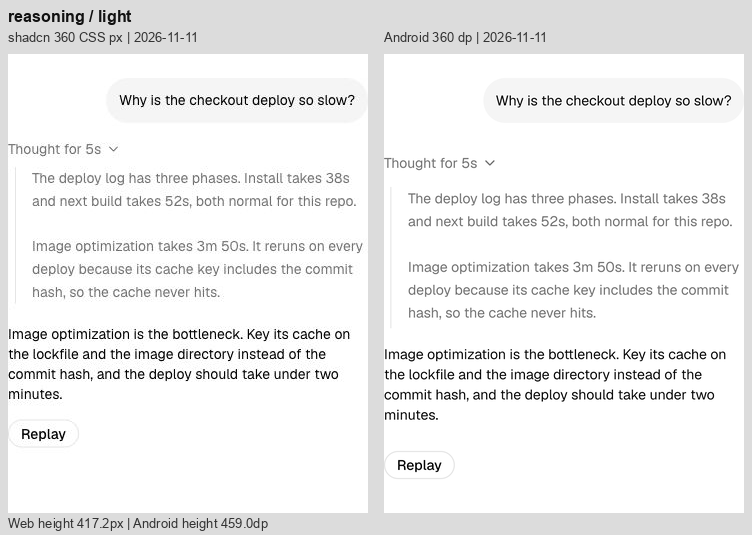
Sources 明显
三条来源行仍使用独立 48 dp 区域，Replay 明显下移；文本起点与层级线大体接近，剩余细差以字体基线为主。
原站 · 原站 339.5 / Android 448.4
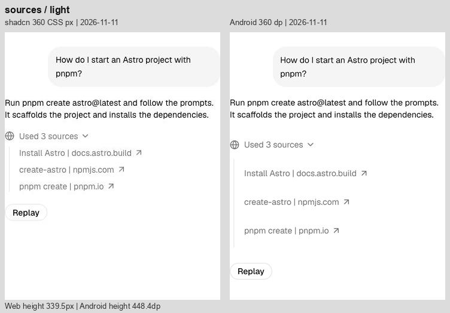
Stack Trace 明显
源码行和框架入口仍更松；错误正文与后续回答下移，红色较鲜。两侧均有层级竖线，不能将竖线本身误判为多余。
原站 · 原站 384.8 / Android 513.9

Subagent 明显
内层正文已继承展开区域的 22.75 行高。工具入口仍逐项增高，说明和回答下移；长命令省略位置仍不同。
原站 · 原站 459.8 / Android 557.3
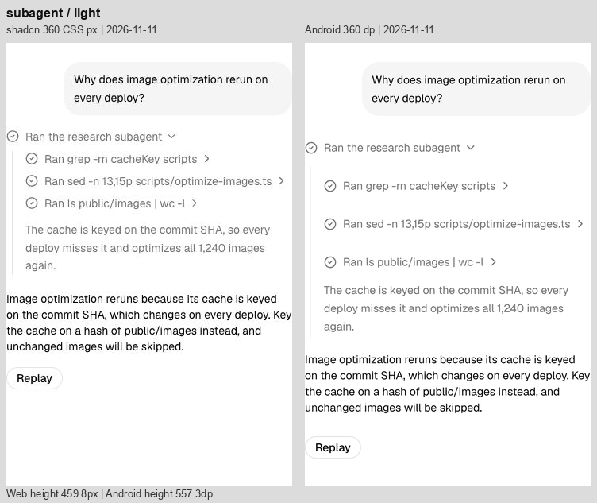
Suggestion 中
渐隐效果已存在，但 48 dp 建议行加外部间隔使输入框比网页低约 28；第三条建议的露出范围也不同。
原站 · 原站 196.0 / Android 224.4
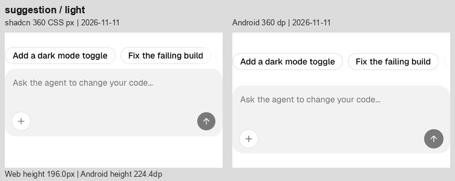
Task 中
两个工具入口使后续回答和 Replay 下移；正文路径的折行位置也不同。
原站 · 原站 299.5 / Android 368.4
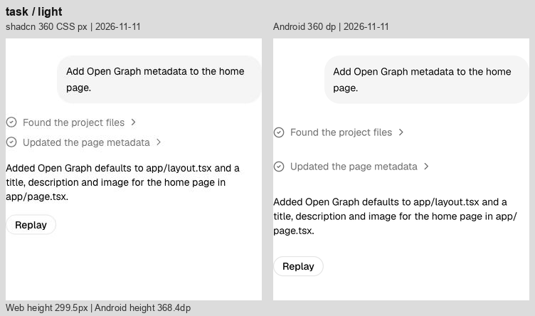
Terminal 明显
三个命令入口使输出块下移；长命令/表格断行不同。底部渐隐与圆角已补齐，当前差别不能归为缺失渐隐。
原站 · 原站 532.8 / Android 613.3
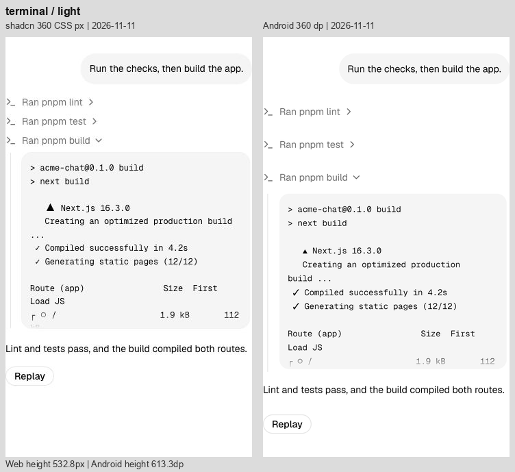
Test Results 明显
测试文件与失败项入口逐层增高，错误块和结论下移；堆栈路径的换行位置不同。
原站 · 原站 502.2 / Android 599.6
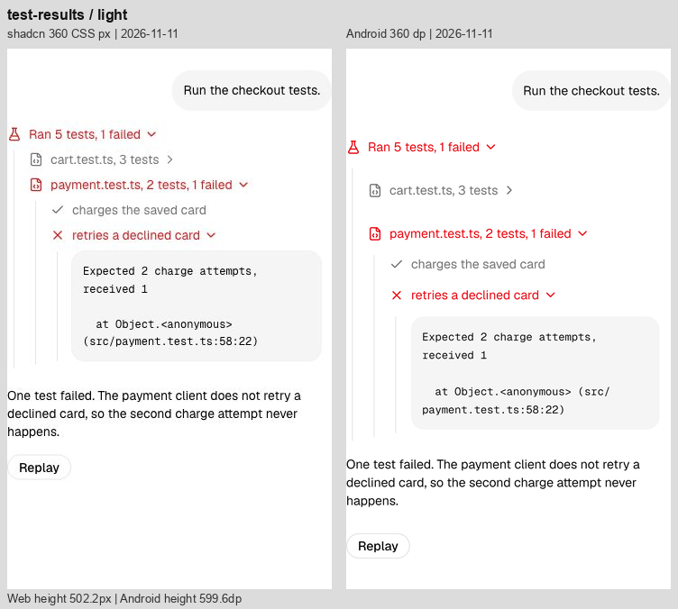
Tool 明显
三条工具入口比网页高，错误输出和结论随之下移；代码字形、内距有细差。
原站 · 原站 320.2 / Android 401.9

Stack 轻
高度差已缩到约 0.9，剩余是标题/分隔线基线和边缘细差。
原站 · 原站 113.0 / Android 113.9
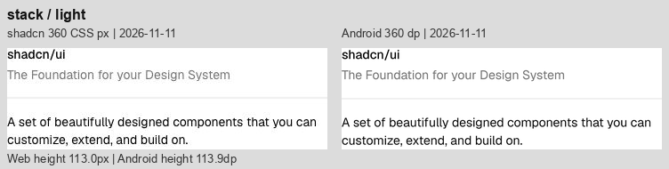
Row 轻
四个徽标排列已接近；单项字形占宽、边框与底色仍有小差别。
原站 · 原站 64.0 / Android 64.0
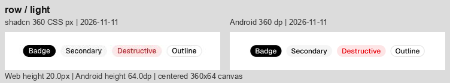
Card 中
去掉卡片正文的重复 16 间距和页脚多余 8 留白；Forgot 文本已贴齐字段右边界。密码框和页脚仍较原站偏下，按钮间的视觉间隔较宽，关联独立 48 dp 编辑/点击行。
原站 · 原站 357.0 / Android 378.3
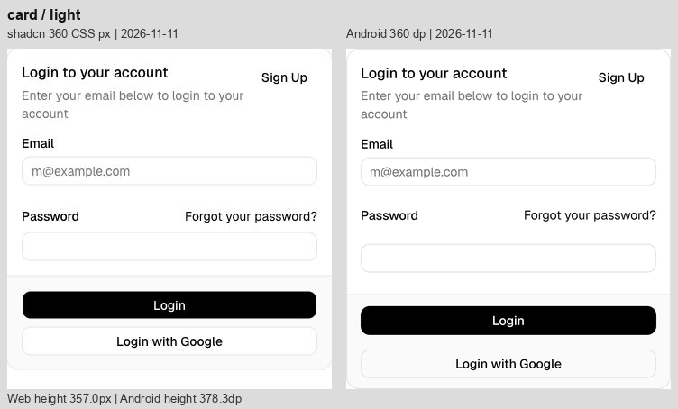
Text 轻
正文换行一致，高度只多约 0.4；主要是字形栅格化细差。
原站 · 原站 40.0 / Android 40.4
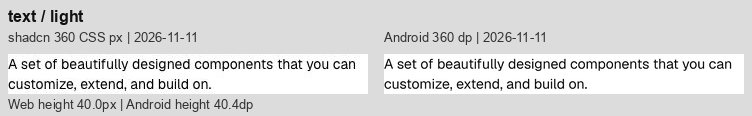
Button 轻
可见高度约 32，形状接近；宽度、文字基线和边缘有细差。64 为对照画布高度。
原站 · 原站 64.0 / Android 64.0
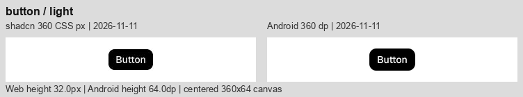
Badge 轻
浅色错误底色已修正；标签宽度、文字和圆角边缘仍有细差。
原站 · 原站 64.0 / Android 64.0

Input 轻
320 内宽、32 可见高度接近；深色填充和边框更明显，文字起点略不同。
原站 · 原站 64.0 / Android 64.0

Select 轻
192 内宽、32 可见高度接近；文字/箭头基线、深色边框与填充仍有细差。
原站 · 原站 64.0 / Android 64.0
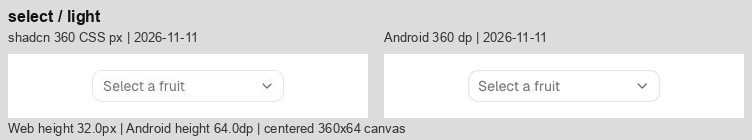
Switch 轻
轨道尺寸、滑块和标签关系接近；边缘与字形占宽略不同。
原站 · 原站 64.0 / Android 64.0

Progress 轻
216 宽、4 高、66% 进度一致；起点圆角与像素边缘略不同。
原站 · 原站 64.0 / Android 64.0

Separator 轻
360 宽、1 高一致；细线明暗与像素取整略不同。
原站 · 原站 64.0 / Android 64.0
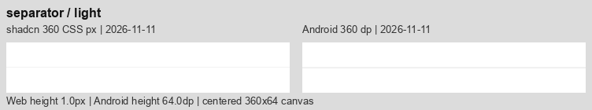
Table 轻
四列与金额完整；行分隔线逐渐偏下，总高多约 3.4，Status/Method 列边界有小偏移。
原站 · 原站 371.5 / Android 374.9

Bar Chart 轻
高度差仅约 0.3，标题/页脚对齐明显改善；柱色、网格线和边缘仍不同。
原站 · 原站 354.4 / Android 354.7

Line Chart 轻
自然曲线形状、布局已接近；描边颜色、细网格与抗锯齿仍不同，高度差约 0.3。
原站 · 原站 354.4 / Android 354.7

Area Chart 中
高度差仅约 0.3；深色面积填充仍偏蓝灰且略暗，网格/描边略不同。截图色差不足以单独证明代码色值错误。
原站 · 原站 354.4 / Android 354.7